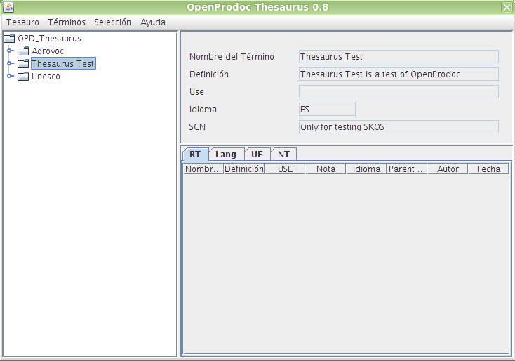

La ventana de tesauros de OpenProdoc tiene 2 zonas principales:
El árbol nos permite navegar por las distintas estructuras de información que componen el repositorio. A partir de una rama principal (OPD_Thesaurus) se puede abrir los distintos tesauros contenidos en el sistema, representados como elementos directamente por debajo de la rama principal. Los siguientes niveles por debajo de los tesauros son los términos de cada tesauro.
Cada término contendrá los términos específicos (NT) representados como elementos contenidos en él. No se utilizan microtesauros pues siempre puede acotarse las búsquedas al conjunto de términos específicos (y así sucesivamente) del término actual.
Debe tenerse en cuenta que OpenProdoc no incluye soporte de polijerarquía, por lo que cada término solo referencia un término genérico (BT). La representación en árbol es por tanto fidedigna
El arbol de tesauros presenta iconos junto al nombre del término o tesauro el siguiente significado:
En el caso del cliente Swing, la apariencia es ligeramente diferente, pero el comportamiento es básicamente el mismo.
Cuando se navega por el arbol de tesauros, la zona derecha contendrá a su vez dos zonas:
Siempre que se selecciona un término o tesauro pulsando sobre su nombre en el árbol, se convierten en el "tesauro actual" o el "término actual". Todas las operaciones se realizan sobre el elemento actual, por tanto, al elegir por ejemplo Término->Borrar, se borrará el término actual, y al elegir Tesauro->Modificar, se modifica el tesauro actual.
En la parte superior se dispone de unos menús desplegables para realizar operaciones sobre el tesauro actual o sobre el t actual, así como otra serie de opciones. Al elegir una opción del menú, en el cliente Web aparecerá un formulario para realizar la operación en la zona derecha de la pantalla. En el caso de los clientes Swing, aparecerá una ventana emergente para realizar la operación.

En la versión de cliente Swing, esa tabla de términos puede ordenarse seleccionando la cabecera de cada columna. Puede también cambiarse el tamaño de cada columna arrastrando la línea separadora de las cabeceras